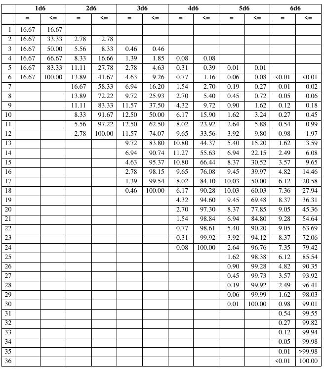

The Fantasy Trip
[I should have posted this a long time ago. Oh well. At least it's being posted now.]
Back in the Day
I really wish I'd gotten a copy of Steve Jackson's Melee in 1977 and Wizard in 1978 when they were published by Metagaming, and Advanced Melee, Advanced Wizard, and In the Labyrinth when those came out in 1980. Together those make up the game The Fantasy Trip (TFT). Melee and Wizard are the basic combat and magic rules, published as board games. Advanced Melee and Advanced Wizard are the full combat rules. And In the Labyrinth adds all the other stuff necessary for a complete roleplaying game.
{kind=link}
{kind=link}
But I never saw them in any store in my area. I did meet one person who played The Fantasy Trip, probably in 1981 or so, but never got to talk to him about it; we were both quite busy with other things at the summer camp from hell. Wish he'd brought his rulebooks…
Modern Times
I picked up my copies of the original Advanced Melee, Advanced Wizard, and In the Labyrinth much more recently. Probably in 2018 or so. Thank goodness for Internet game stores.
{kind=link}
{kind=link}
{kind=link}
Legacy Edition
In 2018 Steve Jackson Games kickstarted The Fantasy Trip Legacy Edition, with new versions of Melee and Wizard and a new version of In the Labyrinth that contained everything from the original as well as the rules from Advanced Melee and Advanced Wizard, and I backed it, and got a LOT of stuff. I liked the new edition of The Fantasy Trip a lot. But I didn't have a good chance to play it for a while.
There were some interesting changes from the Metagaming version of The Fantasy Trip to the Legacy edition.
{kind=link}
{kind=link}
{kind=link}
{kind=link}
And the PDF of Melee is available from Steve Jackson Games for free!
Playing Melee Online
I got to play Melee online in 2023 and had fun. It took a while for everybody to get used to the way combat works — it's a hex-based tactical combat system that strives for verisimilitude, and is quite different from anything that the others were used to. This group has been playing Mini Six from Antipaladin Games mostly before this, with some of Deep7's 1PGs thrown in; previously we've played a lot of Labyrinth Lord from Goblinoid Games and Savage Worlds from Pinnacle Entertainment Group, and while Savage Worlds is played on a square grid battle map, it's still not tactical in the same way as TFT, DragonQuest from SPI, or GURPS from Steve Jackson Games. I played a lot of DragonQuest and GURPS (TFT's younger relative) in the 80s and 90s, which both have hex-grid based tactical combat, and enjoyed them a lot, so TFT's system wasn't such a shock to me.
Anyway, I backed Steve Jackson Games' TFT kickstarters as well as Gaming Ballistic's kickstarters, so I've got a lot of the stuff published for The Fantasy Trip Legacy Edition. It's a pity I'm not playing face to face these days, because most of those kickstarters were loaded with neat stuff for face to face play — megahex tiles, cards of all kinds, neoprene battle maps, and more.
I continued playing Melee online, and added in Wizard. Eventually I plan to start running a TFT campaign using the many adventures released by Steve Jackson Games and Gaming Ballistic. And they've released a number of solo adventures, so I plan on playing those as well.
Right now I'm working on a hexcrawl using TFT, to be played somewhat in the West Marches style, with a long past apocalypse that destroyed a huge empire. The idea is the people are moving back into the areas left abandoned for centuries after the apocalypse due to inimical magic that has recently retreated.
Description of Melee
Melee is a person-to-person combat board game. A Melee character has two stats, Strength (ST) and Dexterity (DX), and a secondary stat, Movement Allowance (MA). ST determines what weapons you can use. DX determines how hard it is for you to hit your opponents: you roll 3d6 equal to or under your (adjusted) DX to hit (noted as a 3/DX roll). MA determines how fast you can move on the hex grid battlemap. Human characters start with 8 in ST and DX and have 8 more points to allocate however you want between the two, for a total of 24 points. There are NO dump stats, and every combination of stats, weapons, and armor results in quite differently performing characters, which interact with the combat system in interesting ways. Unarmored humans start with MA 10, but most armor reduces a characters MA. Armor also lowers your DX. When you are familiar with the system you and one or more friends can create characters and fight a battle in an hour or so, but when you are first starting out it will take a while to internalize the system so it runs quickly. Melee also has various nonhuman opponents: bears, wolves, giant snakes, giants, and gargoyles. It also has fantasy fighters: elves, dwarves, halflings, orcs, goblins, and hobgoblins, who start with different minimum ST and DX, sometimes with different maximum total points. Characters gain experience and when they have 100 they can trade it in for a point to increase ST or DX. Up to 8 points can be gained this way.
Description of Wizard
Wizard adds a third stat, Intelligence (IQ), and a lot of spells. You've still only got 8 points to spend between the three stats, so characters can have 32 points total. Wizards can know as many spells as they have IQ points. Spells are rated by the IQ necessary to learn them. Wizards roll 3/DX to see if they've cast their spells correctly. Each spell has a ST cost to cast; some spells can be continued with a different ST cost. Typically if a wizard fails the roll to cast the spell it still costs 1 ST. Wizard also adds a couple more monsters, Myrmidons, and two sizes of dragon: 4 hex and 7 hex. Wizard is scaled well to work beside Melee as a person to person combat board game.
Description of In the Labyrinth
In the Labyrinth (ITL) adds some elaborations to combat and magic, as well as all the things necessary to make The Fantasy Trip a complete roleplaying game. In particular, they add talents, non-magical abilities. Talents allow a character to try to do something, or makes something anybody can do easier. Talents are rated by the IQ necessary to learn them, and by how many points IQ points they cost to get at character creation. Talents cost twice as much (in IQ points at character creation and in XP after character creation) for wizards as they do regular “hero” characters. Regular heroes can learn spells, but they cost triple (in IQ points at character creation and in XP after character creation) what they cost wizards. ITL adds lots of spells, many of which have non-combat uses, as you'd expect from an RPG.
Finding out if your character succeeds is a matter of rolling dice equal to or lower than your stats. For easy things you roll 2 dice or even 1 die, normal things take 3 dice, while difficult things take 4, 5, even or more dice! Look at the chance to roll a 14 or less on 6d6! Yikes!
Random things I like about TFT
Melee and Wizard are relatively simple person to person combat board games that serve as an introduction to the full system.
Uses only six sided dice.
Tactical hex grid based combat with verisimilitude.
The RPG is a complete fantasy roleplaying game in one 176 page book.
ITL's one page Quick Character Generation lets you quickly roll up a new character with interesting features and personality.
The Table of Jobs.
Creating Magic Items.
ITL's mini setting of the Village of Bendwyn and Southern Elyntia.
Characters, even complicated ones, fit on a 3×5 card.
It's got a free app, TFT Helper, for iOS and Android!

Comments
Comments powered by Disqus